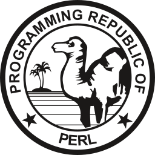
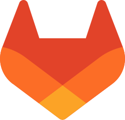
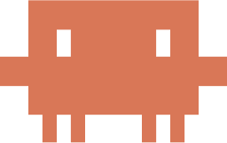

提供できること
ソフトウェア開発の全工程に、開発現場の「あと一人」として入ります。
- 組み込みソフトウェア開発
要件定義から保守まで全工程。車載・POS・決済端末・公共系。
C / C++ / C# - 開発プロセス改善・チーム支援
Git / GitLab / Jenkins 導入、ツール化、静的解析とレビューの運用。
改善 / 管理 - 生成AI活用支援
ローカルLLM構築と、Claude Code による開発・テストの効率化。
ローカルLLM

ローカル完結の生成AI環境
Ollama、vLLM、llama.cpp、Open WebUI でローカルLLM環境を構築し、Claude Code を組み合わせてテスト作業を自動化します。コードも仕様書も社内ネットワークの外に出しません。
実績ハイライト
2023年の独立以降に参画した3件。車載・カーナビ・公共系を含む全25件は業務履歴に。
-
POSシステムの生成AIによる業務効率化
次期POSシステムのモジュールテストを生成AIで自動化する仕組みを考案・開発。ローカルLLMの構築・運用と、生成AIソリューションの提案も担当。
C · C++ · C# · 組み込みWindows · Claude Code · ローカルLLM
2026 – 参画中 -
決済端末開発
非接触ICクレジット機能の移植（設計・製造・テスト）。Unity / CMock によるテスト自動化と、生成AIを使った作業効率化を並行して実施。
C · 組み込みLinux · Unity / CMock
2025 – 2026 -
次期POSシステム開発
電子マネー決済まわりの設計・製造・テスト（全体100名規模）。携帯決済端末のアプリ開発は、前任者不在のなか、資料を集めて設計書を起こすところから担当。
VB.NET · SQL Server · Java · Android · PowerShell
2023 – 2025
経歴
- 1993
東京電機大学 理工学部 情報科学科を卒業し、協栄産業株式会社に入社。以後20年、高速道路・警察・鉄道券売機などの公共系と、欧州・北米向けカーナビゲーション（英語仕様書、オフショア開発の管理、全体100〜200名）の大規模開発に従事。
- 2013
静岡県へ移住。車載メーター制御ソフトウェアの開発（AUTOSAR Classic Platform / ISO 26262 / A-SPICE）に約8年。チーム20名のマネジメント、客先との仕様折衝、静的解析結果の判定まで担当。2020年からは改善ワーキンググループを立ち上げ、Git / GitLab / Jenkins を導入・定着。
- 2023
フリーランスとして独立。屋号「ねこのてエンジニア」。POSシステム・決済端末の開発に参画。
- 2026
次期POSシステムの開発現場で、生成AIを活用したテスト自動化・業務効率化を担当中。
屋号「ねこのて」の由来
猫の手も借りたい。そんな開発現場の「あと一人」になれるエンジニアでありたい、という思いを込めています。ウォーターフォール開発を主に、大規模プロジェクトで多くの人と関わってきました。プログラミングだけでなく、上流工程や要件調整の折衝、チームマネジメントも得意です。
32インチ4Kモニタ2枚と ThinkStation PGX 2台の仕事場で、猫3匹と暮らしています。オンライン会議に猫が乱入することがあります。オフはロードバイクとジョギング。
扱える言語・ツール

Perl
GitLab
Claude Code- 規格・プロセス
MISRA C 2004・2012 / CERT-C / Automotive SPICE V3.1 / ISO 26262 / ISO 9001
- プラットフォームとツール
AUTOSAR Classic Platform / VxWorks / GHS MULTI / WinAMS・CasePlayer2 / QAC・Helix QAC・Polyspace / Windchill / llama.cpp・Open WebUI
案件のご相談
業務委託（準委任・請負）。長期参画のほか、スポットの技術相談・生成AI導入相談も受けます。お見積りは案件ごとに個別に提示します。案件の概要・想定時期・稼働条件など、わかる範囲でお書きください。通常2営業日以内にご返信します。
営業・勧誘目的（広告・SEO・人材紹介など）のご連絡には返信しません。